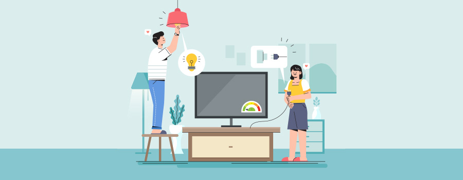

01전기 공사업체를 위한 비상 계획의 중요성
미국 노동통계국(Bureau of Labor Statistics, BLS)에 따르면 현재 650,000명 이상의 미국인이 전기 기술자로 고용되어 있다. 그들은 전기 배선 및 설비를 유지, 설치 및 수리하거나 새 장비를 맞춘다. 직업 및 전체 전기 계약 산업은 OSHA의 규제를 받는다. 이러한 수준의 규제에도 불구하고 업계의 수천 명의 근로자는 매년 치명적이지 않은 사고 및 사건의 영향을 받으며 종종 부상당한 사람에게 막대한 개인적 비용이 발생한다. 노동통계국은 2020년 한 해에만 업계에서 7,000건 이상의 치명적이지 않은 부상이나 질병이 발생했다고 보고했다. 이는 정규직 근로자 10,000명당 거의 130건의 사고에 해당한다.
02전기 산업의 일반적인 작업장 비상 사태
전기 충격 및 전기 화상은 전기 산업에서 근로자가 겪는 가장 빈번한 부상이다. 둘 다 계획되지 않았거나 보호되지 않은 전류와의 접촉으로 인해 발생하며 부상은 치명적이거나 치명적이지 않을 수 있다. 국제전기안전재단은 대부분의 전기 사고가 건설 산업에서 발생한다고 보고하였다. 모든 전기 및 관련 직업 중에서 전기 기사, 건설 노동자, 화가, 목수 및 지붕 수리공이 가장 자주 영향을 받는다. 그들은 전체 사망자의 거의 1/3을 차지한다.
03전기를 다루는 산업에서 작업장 비상 사태를 방지하기 위한 전략
직장 상해를 예방하는 것은 고용주, 직원 및 고객에게 최선의 이익이며, 비용 효율적이며 프로젝트 지연 또는 계약의 완전한 손실을 방지한다.
비즈니스의 대부분의 측면과 마찬가지로 전략적 접근 방식을 취하는 것이 가장 효과적이다. 전기 산업에서 작업장 안전 전략을 준비하는 계약자는 다음 측면을 고려해야 한다.
- 회사 내 사고의 가장 일반적인 원인이 있는지 확인
- 적절한 예방: 회사에 충분한 자격을 갖춘 최초 대응자가 있고 작업 현장에 충분한 응급 처치 용품이 갖추어져 있는지 확인. 전기 사고를 처리하는 데 적합한 용품인지 확인.
- 전기 작업장 안전 상태: 작업장 안전상태가 전체 비즈니스 목표의 일부이어야 함.